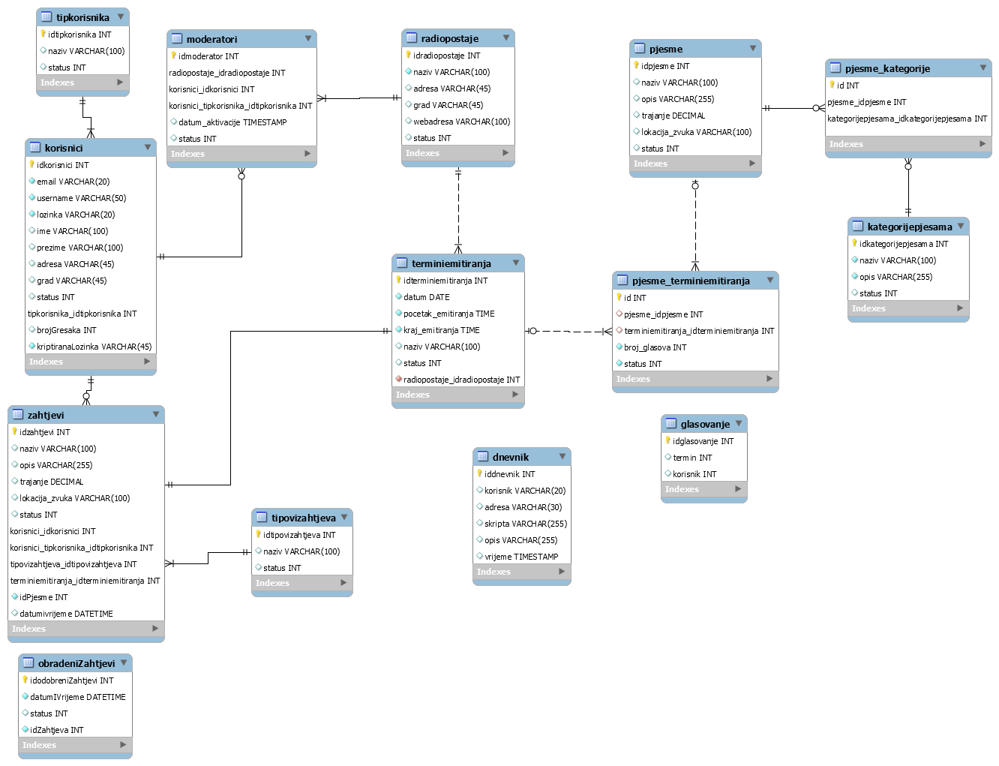
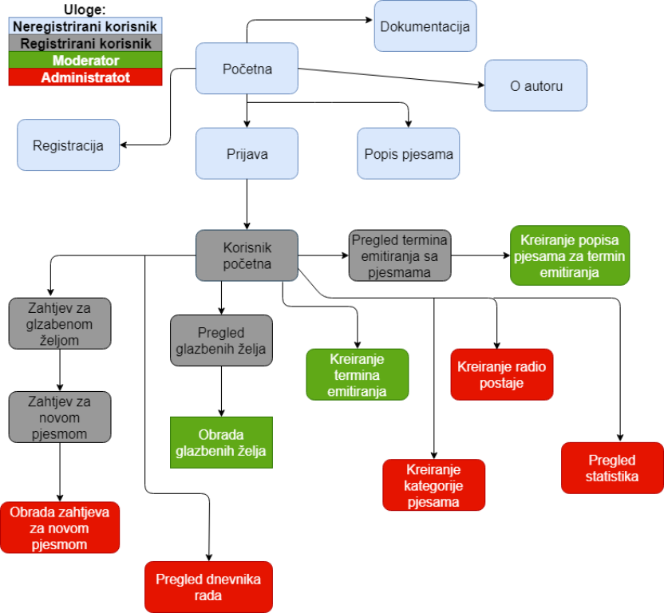

Opis projektnog zadatka
Sustav omogućuje planiranje emitiranja glazbenih želja radio postaje.
Uloge:
- Neregistrirani korisnik
- Registrirani korisnik
- Moderator / Voditelj radio stanice
- Administrator / Urednik radio stanice
Detaljne upute:
Administrator
- Kreira radio postaje (Otvoreni, Megaton, …) i dodjeljuje moderatore radio postaji.
- Kreira kategorije pjesama (rock, pop, jazz, ….), obavezno unosi naziv i opis.
- Odobrava ili odbija zahtjeve za dodavanjem nove pjesme. Pjesme koje odobri stavlja u neku kategoriju.
- Pregledava statistike zahtjeva za glazbenom željom (prihvaćenih/odbijenih) u nekom razdoblju uz mogućnost da se odabere postaja i onda se dobiju podaci po pjesmi.
Moderator
- Kreira termine emitiranja gdje navodi datum i vrijeme početka i završetka emitiranja.
- Pregledava i prihvaća/odbija zahtjeve za glazbenom željom korisnika. Prihvaćen/odbijen zahtjev za glazbenom željom ima datum i vrijeme prihvaćanja/odbijanja. Ne može odobriti zahtjev, ukoliko korisnik predlaže novu pjesmu, sve dok pjesmu ne odobri administrator.
- Dodaje pjesme u termin emitiranja iz popisa prihvaćenih glazbenih želja. Ukoliko ima više zahtjeva za istom pjesmom ona se u popisu prikazuje samo jednom. Pjesme se sortiraju silazno prema broju glasova.
Registrirani korisnik
- Kreira zahtjeve za glazbenom željom pri čemu obavezno odabire termin emitiranja, može odabrati postojeću pjesmu ili predlaže novu pjesmu. Ako predlaže novu pjesmu mora unijeti naziv, opis, trajanje pjesme (u sekundama) i postaviti zvuk, automatski se šalje zahtjev administratoru.
- Pregledava zahtjeve za glazbenom željom sa statusom (prihvaćena, odbijena od administratora, odbijena od moderatora).
- Vidi popis pjesama u listi za emitiranje i može glasovati za jednu pjesmu u jednom terminu sve do početka emitiranja.
Neregistrirani korisnik
- Može pretraživati pjesme uz mogućnost filtriranja po kategoriji pjesme. Svaki element ima dvije poveznice na kategoriju i pjesmu.
- Vidi informacije o pjesmi sa zvukom.
- Vidi informacije o kategoriji pjesme.
Opis projektnog rješenja
Projektno rješenje je napravljeno pomoću HTML-a, CSS-a, JavaScript-a i php-a, a baza podataka je MySQL. Rješenje ima četri tipa korisnika kako je i navedeno u projektnom zadatku. Aktivnosti neregistriranog korisnika se ne bilježe u bazu podataka. Kod prvog dolaska na stranicu korisnik dobiva obavjest o korištenju kolačića. Neregistrirani korisnik se može registrirati za daljnje korištenje aplikacije, može pregledavati kategorije pjesama i same pjesme koje se koriste u aplikaciji.
Registrirani korisnik dobiva mogućnost davanja svojih prjedloga za nove pjesme koje bi želio da se koriste i uvrštavaju u programe radio postaja. On može predlagati pjesme koje će se puštati u nekom terminu i može glasati za svoju pjesmu u nekom terminu.
Registrirani korisnik može postati moderator neke radio postaje ako mu to pravo dodjeli administrator sustava, a to pravo mu moderator također može i oduzeti. Kada je korisnik postao moderator on za tu radio postaju može kreirati nove termine emitiranja. U te termine može dodavati pjesme za koje su korisnici poslali želje da ih se emitira i koje je moderator odobrio.
Ukoliko je korisnik zatražio da se u termin doda neka nova pjesma koja još ne postoji u sustavu takvu pjesmu prije moderatora mora odbriti administrator. Sam administrator kreira nove radio postaje, kreira nove kategorije pjesama. On može pregledavati i logove sustava i što se konkretno na sustavu radilo i kada.
Svaka viša uloga može raditi i sve ono što može na sustavu raditi i niža uloga. Tako moderator može raditi ono što može raditi registrirani korisnik, a administrator može raditi sve što mogu raditi registrirani korisnik i moderator. Svi mogu raditi ono što može raditi, odnosno pregledavati neregistrirani korisnik.
Bitne odrednice projektnog rješenja
Era model
Popis i opis skripata
- zabLozinka.php - Skripta za vraćanje lozinke registriranim korisnicima.
- prijava.php - Skripta koja provjerava da li postoji korisnik i da li odgovara tom korisniku unesena lozinka.
- registracija.php - Skripta koja omogućuje registraciju novih korisnika (pohrana podataka u bazu podataka)
- pregledPjesama.php - Skripta koja dohvaća i prikazuje sve pjesme dostupne u sustavu
- pregledKategorija.php - Skripta koja dohvaća i prikazuje sve kategorije pjesama dostupne u sustavu
- aktivacija.php - Skripta koja aktivira korisnikov račun kako bi on mogao koristiti sustav
- davanjeGlasa.php - Skripta koja obrađuje davanje glasa korisnika. Provjerava da li je korisnik u tom terminu već dao glas i ako nije bilježi njegov glas u bazu podataka
- dohvatiTermine.php - Skripta koja dohvaća sve termine za odabranu radio postaju
- glasnja.php - Skripta koja dohvaća i prikazuje sve pjesme prema radio postaji i terminu te omogućava davanje glasa nekoj od njih
- novaPjesama.php - Skripta koja omogućava davanje zahtjeva za novom pjesmom u sustavu
- noviZahtjev.php - Skripta koja omogućavanje predaju zahtjeva za dodavanjem pjesme u odabrani termin emitiranja za neku radio postaju
- odjava.php - Skripta koja omogućava odjavu korisnika iz sustava
- pjesmeIzTermina.php - Skripta koja dohvaća sve pjesme koje se nalaze u nekom terminu emitiranja
- pregledZahtjeva.php - Skripta koja dohvaća i prikazuje sve zahtjeve korisnika i u kojem su statusu
- dodavanjePjesmeUTermin.php - Skripta koja sprema podatke u pjesmi koja je dodana u neki termin emitiranja
- glazbeneZelje.php - Skripta koja dohvaća i prikazuje sve glazbene želje koje mora moderator odobriti ili odbiti
- noviTermin.php - Skripta koja omogućuje dodavanje novih termina za radio postaju
- obradaZelje.php - Skripta koja omogućuje promjenu statusa želja. Ovisno da li je odbijena ili prihvaćena želja.
- pjesmeTerminEmitiranja.php - Skripta koja dohvaća i prikazuje sve pjesme koje moderato može dodati u neki termin emitiranja
- dnevnik.php - Skripta koja dohvaća i prikazuje sve logove sustava
- dodavanjeModeratora.php - Skripta koja dohvaća i prikazuje sve korisnike koji su moderatori i dodjeljuje ga odabranoj radio postaju
- kateorije.php - Skripta koja omogućuje dodavanje novih kategorija pjesama u sustav
- novaPostaja.php - Skripta koja omogućava dodavanje nove radio postaje u sustav
- dnevnik.php - Skripta koja dohvaća i prikazuje sve logove sustava
- noviModerator.php - Skripta koja dohvaća i prikazuje sve registrirane korisnike i omogućva davanje odabranom korisniku prava moderatora ili mu ga se oduzima
- otkljucavanjeRacuna.php - Skripta koja omogućava otključavanje računa korisnicima kojma je račun zaključan
- povezivanjeKategorijeSaPjesmom.php - Skripta koja omogućava da se pjesmi pridruži odabrana kategorija pjesme
Navigacijski dijagram
Popis korištenih tehnologija
- HTML - prezentacija web stranice
- CSS - stilizacija web stranice
- JavaScript - validacije na strani klijenta
- php - validacije na strani servera, komunikacija sa bazom podataka
- MySql - pohrana podataka u bazu